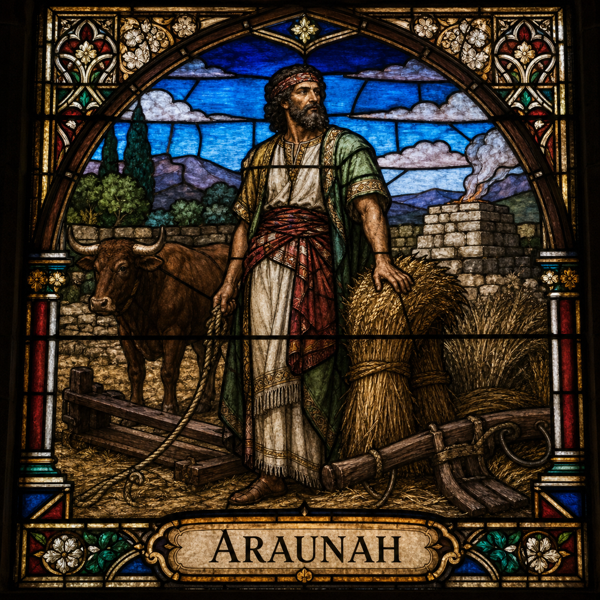

Araunah (M)
First named in 2 Samuel 24:16-25
Araunah (also called Ornan), a Jebusite, owned a threshing floor on a hill in Jerusalem that became the pivot point of one of David's most costly lessons. After David's unauthorized census brought God's judgment on Israel, the destroying angel stopped precisely at Araunah's threshing floor, and Gad the prophet instructed David to build an altar to the LORD there (2 Samuel 24:15-18). When David came to buy the site, Araunah, recognizing the king, bowed low and offered everything freely -- the threshing floor, oxen for the burnt offering, and the threshing sledges and yokes for wood -- refusing any payment (24:21-23; 1 Chronicles 21:23). David's response became one of Scripture's most quoted statements on the nature of worship: 'I will not offer burnt offerings to the LORD my God which cost me nothing' (2 Samuel 24:24), and he insisted on paying the full price -- fifty shekels of silver for the immediate site in Samuel's account, or six hundred shekels of gold for the larger property in Chronicles' fuller version of events (24:24; 1 Chronicles 21:25). David built the altar, offered sacrifices, and the plague was stopped (2 Samuel 24:25). This same site, Mount Moriah, became the location where Solomon later built the LORD's temple (2 Chronicles 3:1) -- meaning Araunah's threshing floor, purchased at real cost rather than accepted as a gift, became the ground on which Israel's central place of worship would stand for centuries.
Thought for Today
Araunah’s story teaches us about generosity; may we look to Jesus, whose grace and truth never fail.
References: 2 Samuel 24:16-25; 1 Chronicles 21:15-28; 2 Chronicles 3:1